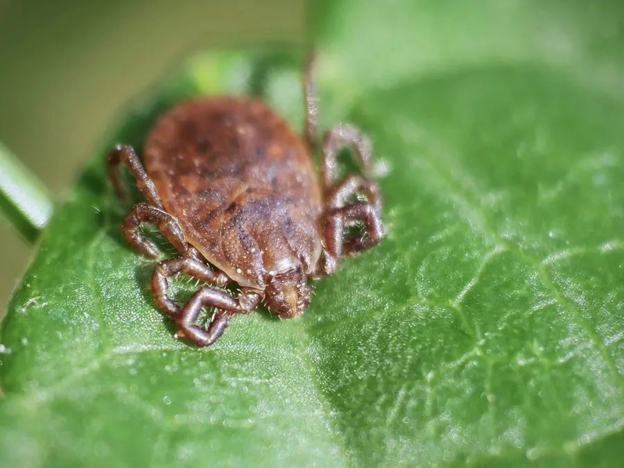

蛛形动物 · 动物界
长角血蜱 Haemaphysalis longicornis

东亚常见的硬蜱，口器两侧须肢细长、盾板无花纹，多数种群行孤雌生殖，可传播发热伴血小板减少综合征，并已入侵北美。
- 分类
- 门节肢动物门纲蛛形纲目蜱目科硬蜱科属血蜱属
- 栖息环境
- 草地、林缘、灌丛、牧场与城市绿化带，常攀附草尖等待寄主
- 地理分布
- 中国、日本、朝鲜半岛、俄罗斯远东及澳大利亚、新西兰；已入侵美国东部
- 保护级别
- IUCN 未评估；为外来入侵与医学媒介物种
物种志
长角血蜱成虫体长约 2.5–4 毫米，未吸血时呈红褐至暗褐色，饱血后可膨大到原来的十余倍。雌蜱盾板仅覆盖背部前部，呈暗褐色、无银白花纹；口器较短而宽，两侧的须肢细长外伸，形成“长角”状外观，故得名“长角血蜱”。体表密布细小刻点与短毛，足较细长。
它们分布于东亚的草地、林缘、灌丛与牧场，寄主包括牛、羊、犬、野兔、刺猬与人。生活史分卵、幼虫、若虫、成虫四期，各期均需吸血，多在春夏季活动。中国、日本与韩国的多数种群行孤雌生殖，雌蜱无需交配即可产下全部为雌性的后代，因此扩散极快；大洋洲与部分地区的种群则有雄蜱。它是发热伴血小板减少综合征的重要传播媒介，也可传播莱姆病与巴贝虫病。2017 年起它在美国东部被大量发现，成为引人关注的外来入侵蜱种。
形态与习性
- 体长未吸血约 2.5–4 mm，饱血后可膨大十余倍
- 寄主牛、羊、犬、野兔、刺猬与人
- 生殖方式东亚多数种群行孤雌生殖，后代几乎全为雌性
- 医学意义传播发热伴血小板减少综合征、莱姆病与巴贝虫病
- 活动季节春夏季最活跃，幼虫与若虫多在草丛等待寄主
- 入侵情况2017 年起在美国东部大量出现，成为外来入侵种
- 生活史卵、幼虫、若虫、成虫四期，各期均需吸血
趣味知识
- 长角血蜱的须肢又长又外伸，从正面看像长了一对尖角。
- 东亚的多数种群不需要雄蜱，雌蜱独自就能产下全是女儿的后代。
- 它在美国东部突然大量出现，成为近年受关注的外来入侵蜱种。